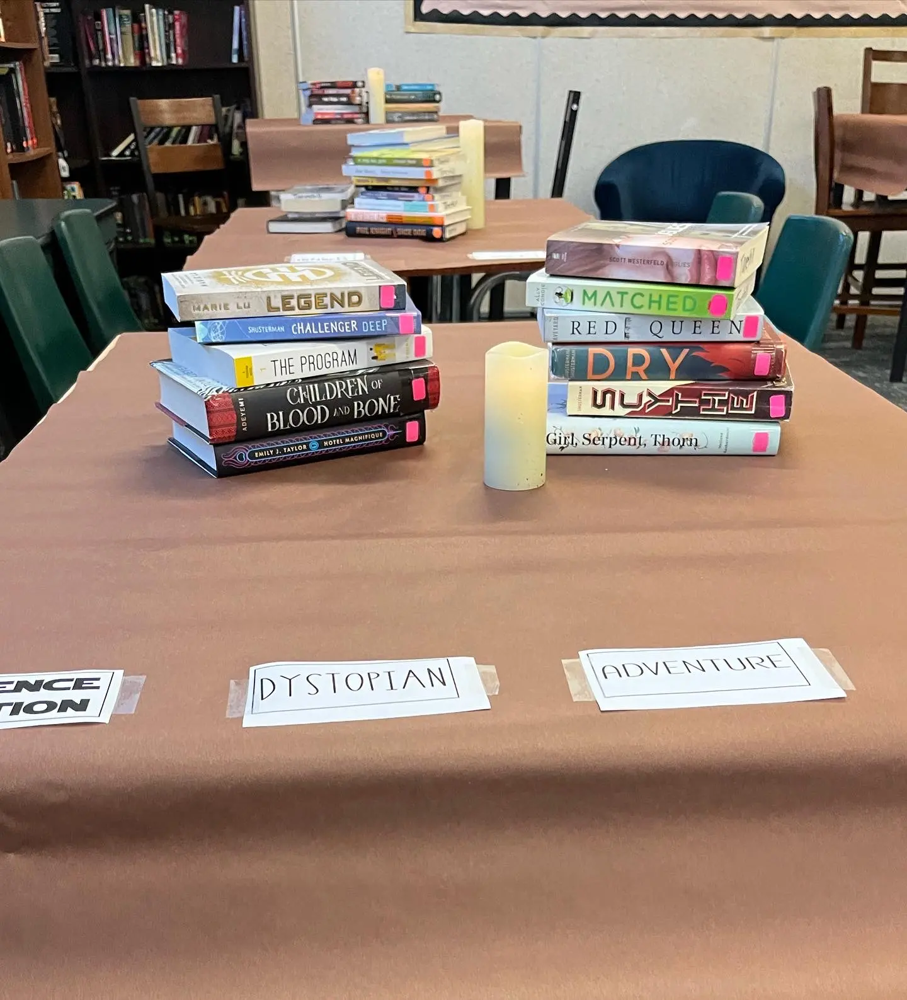
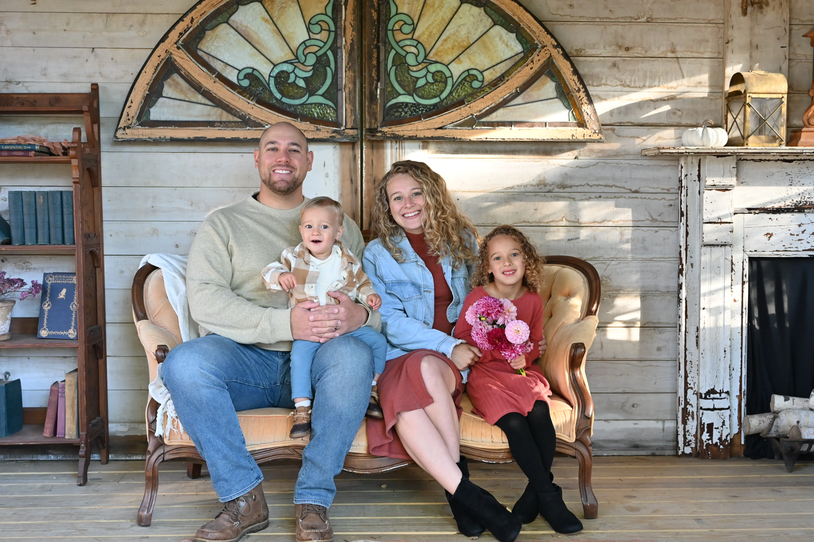

Welcome to My Portfolio

As a classroom teacher, I loved doing creative things to get students interested in reading for pleasure.This was "Starbooks" Day in my high school English classroom. I played barista and made drinks for the students while they browsed a pre-setup book tasting in the classroom

My most treasured role is that of wife and mother. My family is so important to me and are always my first priority.
This particular group of young women are students that I grew exceptionally close with throughout their high school career. I was their Young Life leader and teacher for 4 years.